A fall mantel does not need to look like a seasonal gift shop to feel like autumn arrived.
The best versions use a thoughtful mix of color, texture, height, and a handful of natural elements, pumpkins, foliage, dried flowers, warm candlelight, rather than filling every inch of the shelf.
Starting with one strong focal point and building outward from there, working in a few different heights so nothing sits flat, and leaving the display room to breathe are the three habits that separate a styled mantel from a cluttered one.


Where to Start
A garland is one of the fastest ways to bring a layered look together, especially for a traditional or farmhouse-leaning mantel.
Muted rust, olive, brown, gold, or burgundy foliage, draped loosely rather than pulled into a straight line, with a few branches allowed to extend past the edge, reads as far more natural than a perfectly even strand.
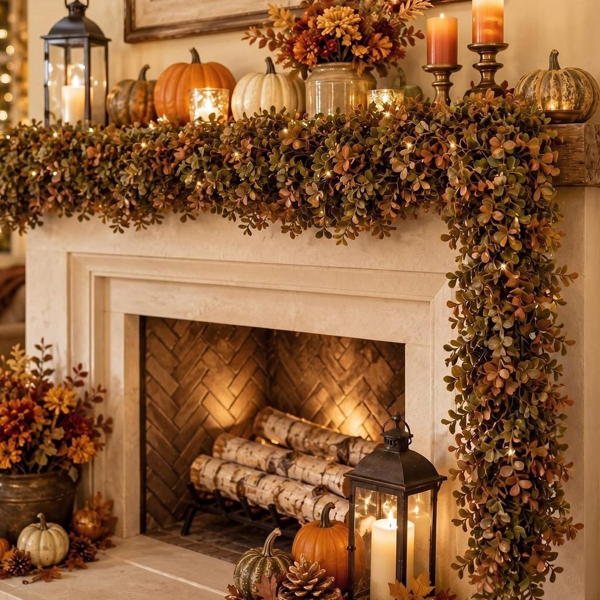
A large mirror, a piece of artwork, or an oversized vase of branches makes a dependable focal point to build the rest of the mantel around instead.
From there, smaller seasonal pieces, pumpkins, candles, foliage, books, ceramic accessories, can layer in around the edges without competing for attention.
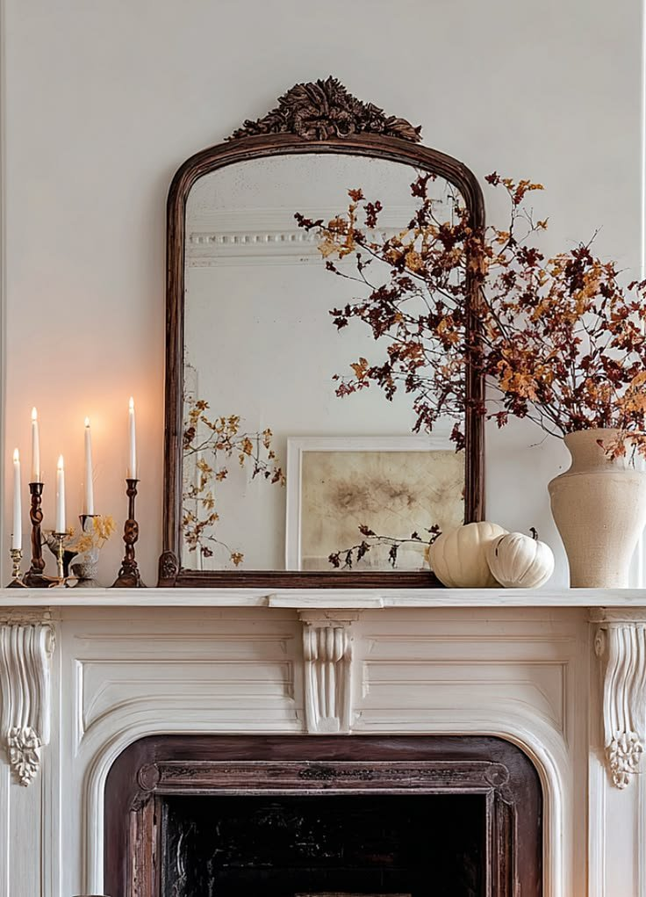
18 Fall Mantel Decor Ideas
1. Keep the Fall Mantel Minimal
Not every fireplace needs a heavily decorated mantel to feel seasonal.
One strong focal piece plus three or four supporting accessories is genuinely enough, a large piece of artwork in the center, then two ceramic pumpkins and a vase of dried branches, covers the whole look.
That restraint is often the harder decorating decision to make, but it tends to read as more intentional than a mantel crowded with every seasonal piece in the storage box at once.
2. Mix Candles With Fall Foliage
Candles instantly make a fireplace feel warmer once the sun starts going down.
Placing candleholders at different heights and surrounding them with loose autumn branches builds real texture into the display; flameless candles work well here too, for anyone who wants the glow without the open flame.
Cream candles paired with brass, wood, or amber glass finish the look, just keep any candles and flammable foliage safely away from an active fireplace.
3. Add a Large Mirror
A large mirror gives a mantel a dependable focal point, and it genuinely works with almost any interior style.
Leaning the mirror against the wall and layering seasonal decorations around its base, a leafy branch, a couple of pumpkins, a few candlesticks, builds the rest of the display around that anchor.
The mirror also bounces light back into the room, which makes it especially useful in a darker living room that could use the extra brightness.
4. Layer Everyday Decor With Fall Accents
This might be the most practical idea on the whole list.
There is no real need to remove the usual mantel decorations every September, the everyday mirror, artwork, vases, books, and candlesticks can simply stay put.
Adding two or three seasonal pieces on top, a few pumpkins, a branch of autumn foliage, one warm-toned accessory, is often enough to completely change how the mantel reads, and it saves both money and effort compared to redecorating from scratch.
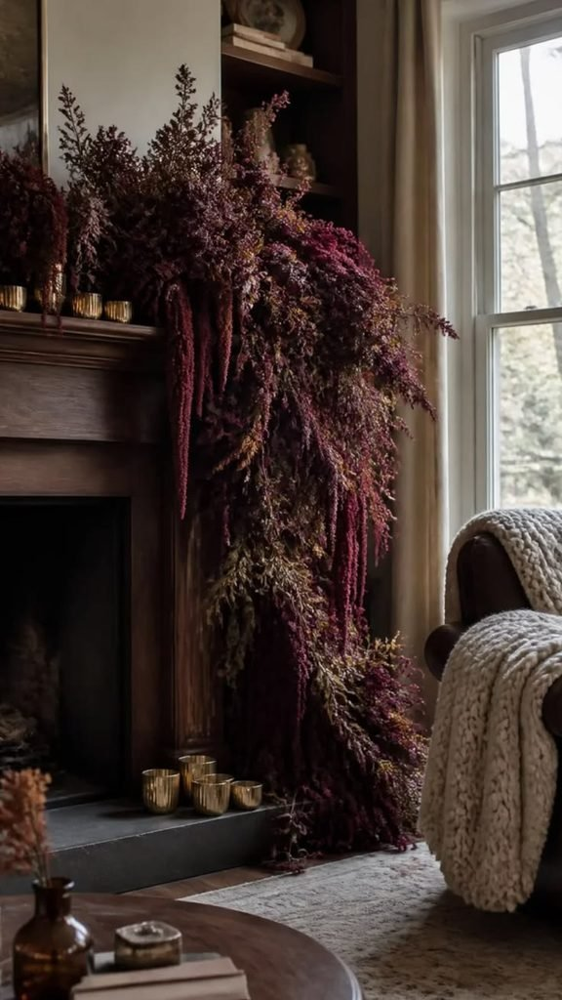
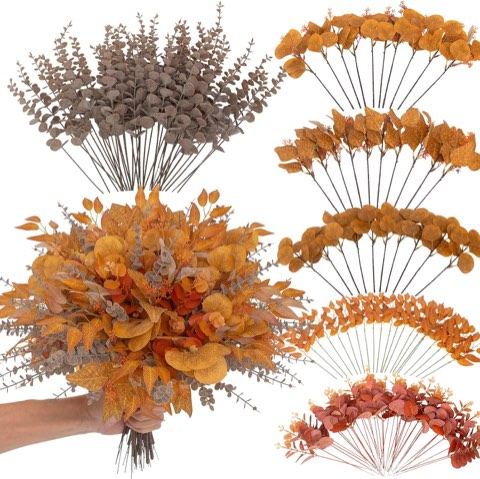
lovemoon Fall Mixed Greenery Artificial Eucalyptus Stems, Orange, 130 Pcs
Shop on Amazon5. Use Oversized Fall Branches
Sometimes one dramatic element does more for a mantel than ten small decorations ever could.
Tall autumn branches in a large ceramic vase, positioned slightly off-center, create that single statement moment, balancing the other side with smaller pumpkins, candles, or pottery keeps the whole arrangement from feeling lopsided.
This approach works especially well on a large fireplace or in a room with tall ceilings, where the branches add real vertical height while the smaller accessories keep everything grounded.
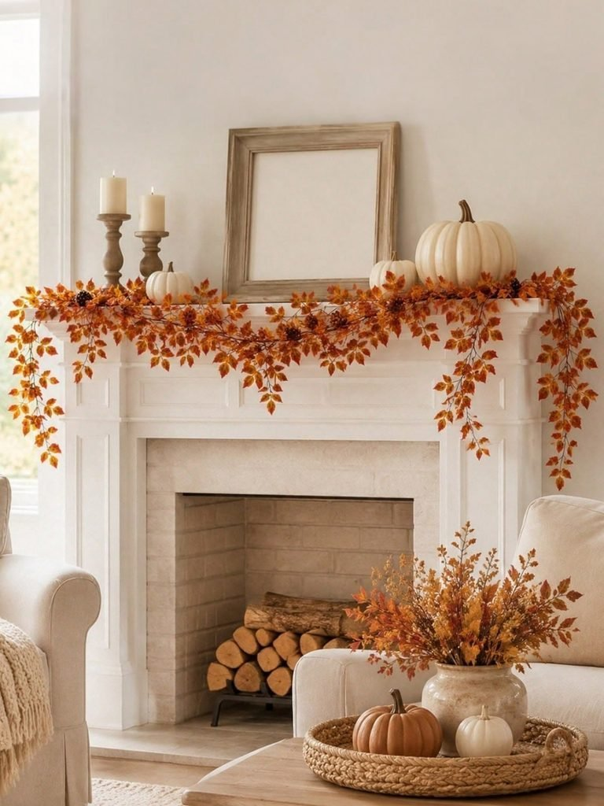
6. Create a Traditional Pumpkin Display
Sometimes the simplest idea is also the best one: a mantel full of pumpkins, arranged with a little intention.
Mixing pumpkins in several shapes, sizes, and colors, with larger ones toward the corners and smaller ones closer to the center, builds a classic fall look fast.
Combining real pumpkins with ceramic, velvet, or wooden versions adds texture variety, and avoiding identical pumpkins throughout keeps the whole arrangement feeling collected rather than mass-produced.
7. Decorate With Dried Flowers
Dried flowers make an excellent fall mantel accessory, since they add texture without overwhelming the space the way fresh arrangements sometimes can.
Dried hydrangeas, wheat, pampas grass, bunny tails, or preserved foliage all work well here.
They also last well beyond a single season, so the same arrangement can move to another room once the mantel gets restyled for winter, paired with a few cream pumpkins and a brass candleholder, they build an easy seasonal display with very little upkeep.
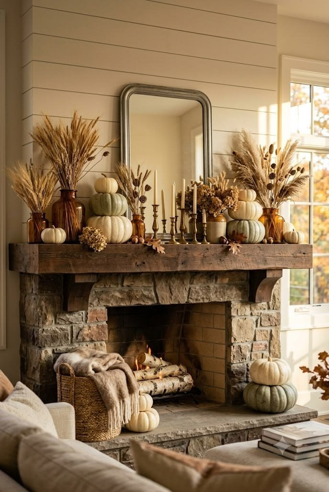
8. Mix Rustic Wood With Fall Greenery
If the fireplace already has beautiful stone, brick, wood, or tile, it is worth letting that architecture contribute to the overall design rather than covering it up.
Wood brings natural warmth and texture on its own, which makes it an easy addition to any autumn display, a wooden frame, a reclaimed wood sign, a wooden bowl, or a set of chunky candleholders all work.
Softening those harder materials with greenery and a few fabric pumpkins keeps the combination from feeling too heavy, and combining wood, greenery, and ceramic together adds just enough texture contrast to keep the mantel from looking flat.
9. Add Vintage Artwork
For fall mantel decor that does not announce the season quite so loudly, vintage-inspired artwork is a strong alternative to pumpkins and seasonal signage.
A landscape painting, botanical print, or antique-style frame introduces warm fall colors on its own, no pumpkins required.
Artwork in shades of brown, faded green, golden yellow, or muted rust, paired with a few brass candlesticks and dried branches nearby, finishes the look, and it is one of the few ideas here that can stay up well past the end of fall.
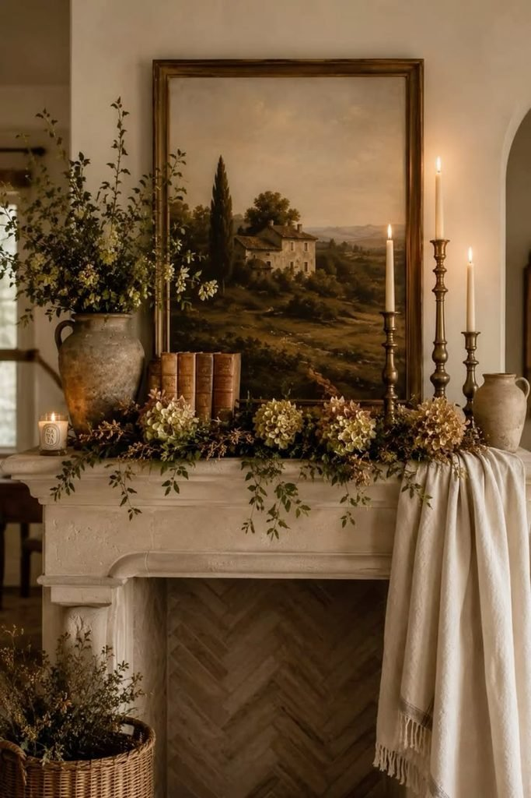

10. Create a Cozy Cottage Fall Mantel
For a cottage-style fall mantel, everything should stay soft, layered, and just slightly imperfect.
An old-looking mirror or landscape painting as the base, then ceramic pumpkins, taper candles, dried flowers, and small pieces of greenery layered around it, builds the whole look.
Perfect symmetry is not the goal here, letting a few objects overlap and vary in height gives the mantel the collected, lived-in character that makes cottage interiors feel so appealing in the first place.
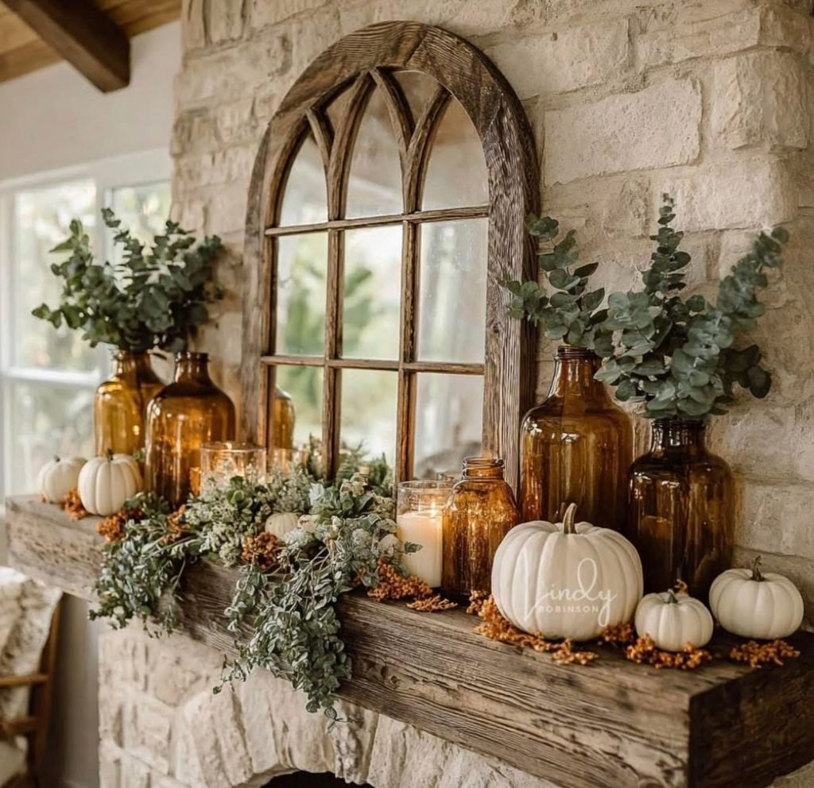

11. Add Lanterns and Warm Lighting
Lanterns bring near-instant coziness to a fireplace, with very little styling effort required.
One or two lanterns on the mantel, filled with flameless candles and surrounded by greenery, pinecones, or small pumpkins, is the whole idea.
Lanterns can also sit on the hearth underneath the mantel if there is enough floor space, and it is worth decorating for evening too, since warm lighting makes a fireplace look like an entirely different display once the sun goes down.
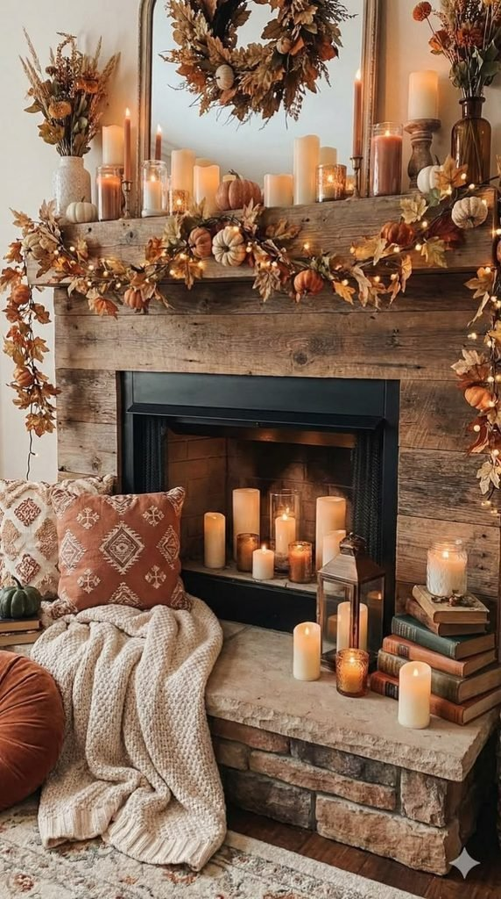
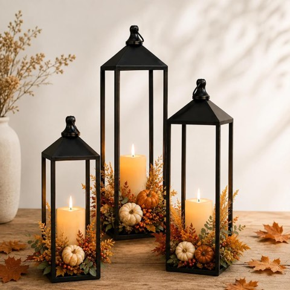
Decorative Floor Lanterns, Set of 3, 22, 19 and 17 Inch, Indoor Outdoor
Shop on Amazon
12. Create a Neutral Fall Mantel With Cream Pumpkins
If the usual bright orange does not suit the room, it is fine to skip it entirely.
Cream pumpkins, beige pottery, dried wheat, ivory candles, and warm wood combine into a distinctly autumnal feeling without introducing much color at all.
This look works especially well in white or light-gray rooms, where the warm, neutral accessories add real depth without competing with anything else already in the space.
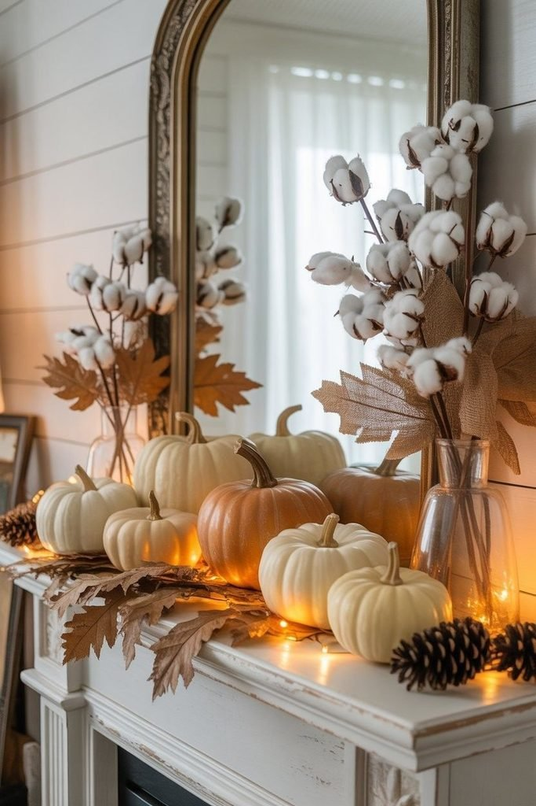
13. Create an Elegant Burgundy Mantel
For something richer than the usual neutral fall palette, burgundy brings real depth to a mantel display.
Burgundy foliage, dark berries, velvet pumpkins, or candles layered against cream, brown, and brass build an elegant autumn combination.
Keeping the background relatively simple lets the deeper color actually stand out, and the whole look pairs especially well with warm wood furniture and cream upholstery nearby.

14. Try Rustic Farmhouse Fall Mantel Decor
For a farmhouse-leaning fall mantel, wood, metal, pumpkins, greenery, and a few vintage-inspired pieces do most of the work together.
Starting with a large wooden frame or rustic artwork, adding a leafy garland underneath, then finishing with pumpkins and candleholders builds the whole look in roughly that order.
Not every piece needs to match perfectly, either, a slightly mismatched collection actually feels more authentic, since real homes rarely look like a perfectly coordinated showroom display.
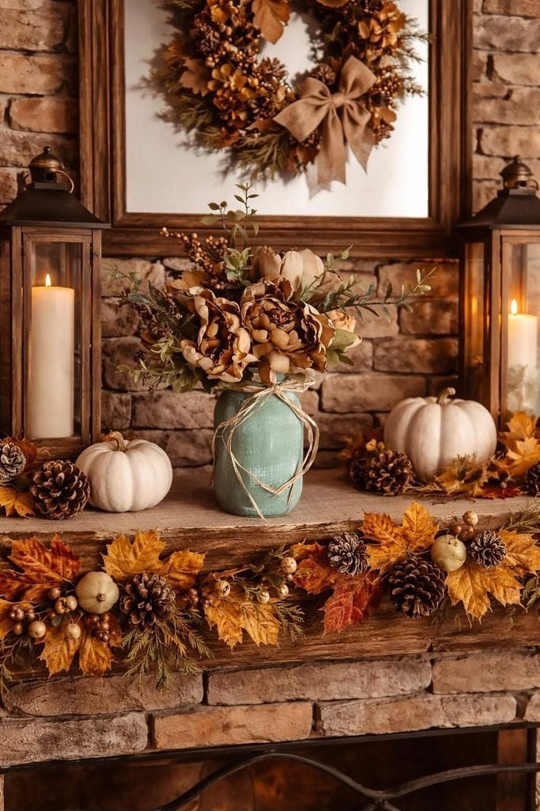
15. Try Black and Cream Fall Decor
Fall mantel decor does not actually require orange to read as autumnal.
Black candlesticks, ivory pumpkins, cream pottery, and a touch of subtle brown foliage build a genuinely sophisticated combination instead.
One small rust or terracotta accent keeps a bit of traditional fall color in the mix if the display starts to feel too stark, the whole look suits a modern home especially well, since it introduces seasonal warmth without pushing the room toward full rustic.
16. Layer a Fall Garland With Mini Pumpkins
A leafy garland draped loosely across the mantel, rather than pulled into a straight line, is one of the most reliable fall mantel moves out there.
Small pumpkins tucked throughout the greenery, mixed in cream, muted orange, and brown so the colors feel naturally connected, add the rest of the seasonal feeling.
A few pinecones or dried berries between the pumpkins build in extra texture, and keeping the pumpkin sizes varied, three or five, never a uniform row, makes the whole arrangement look considerably more natural.
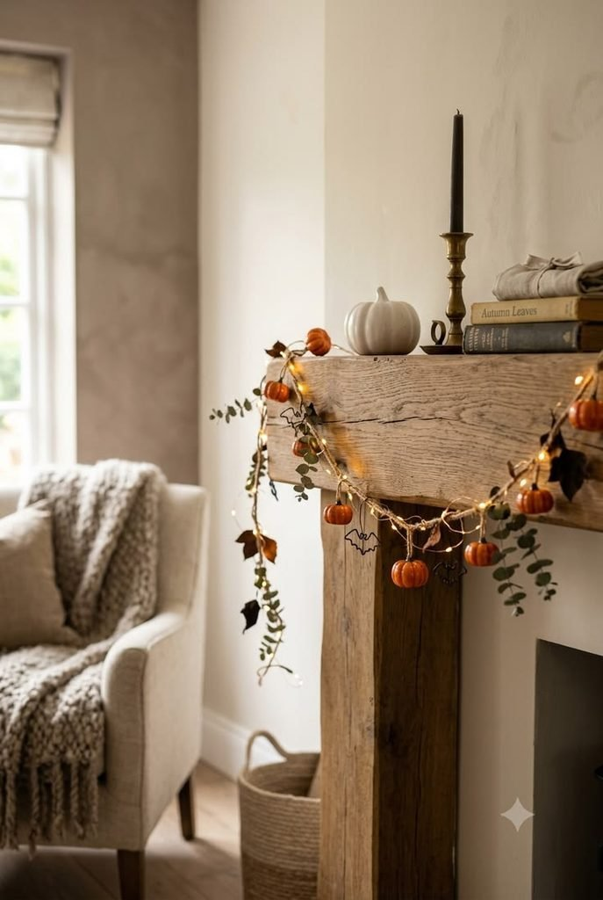
17. Style a Moody Brown Fall Mantel
Brown has quietly become one of the stronger fall decorating colors, and a mantel is a genuinely good place to lean into it.
Chocolate brown, caramel, cream, and aged brass combine into a rich autumn palette, brown ceramic pumpkins, amber glass, and a few dried branches round it out.
It brings real warmth without leaning on the expected bright orange, and the deeper tones photograph beautifully once the lanterns and candles are lit.
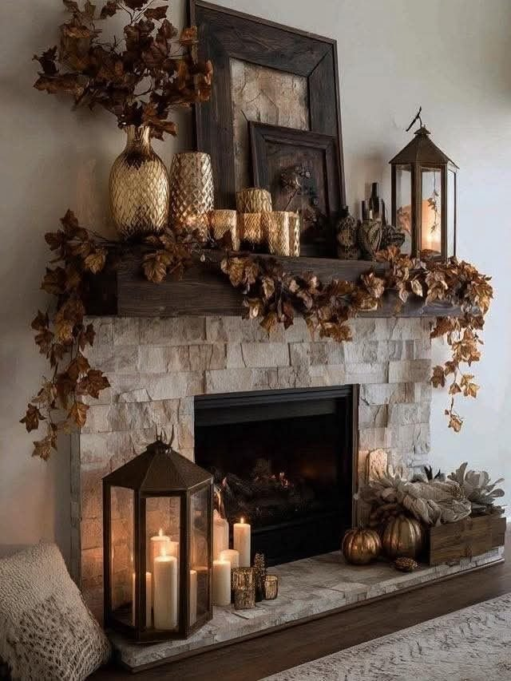
18. Hang a Fall Wreath Above the Fireplace
A wreath gives the whole fireplace an instant focal point, with almost none of the usual mantel-styling effort.
Something built from eucalyptus, dried leaves, berries, or wheat, in muted autumn tones, reads as fall without tipping into costume territory.
Keeping the mantel underneath simple, a couple of candlesticks, a pumpkin or two, maybe a small vase, lets the wreath stay the clear star, and the approach works especially well on a mantel with limited shelf space to begin with.
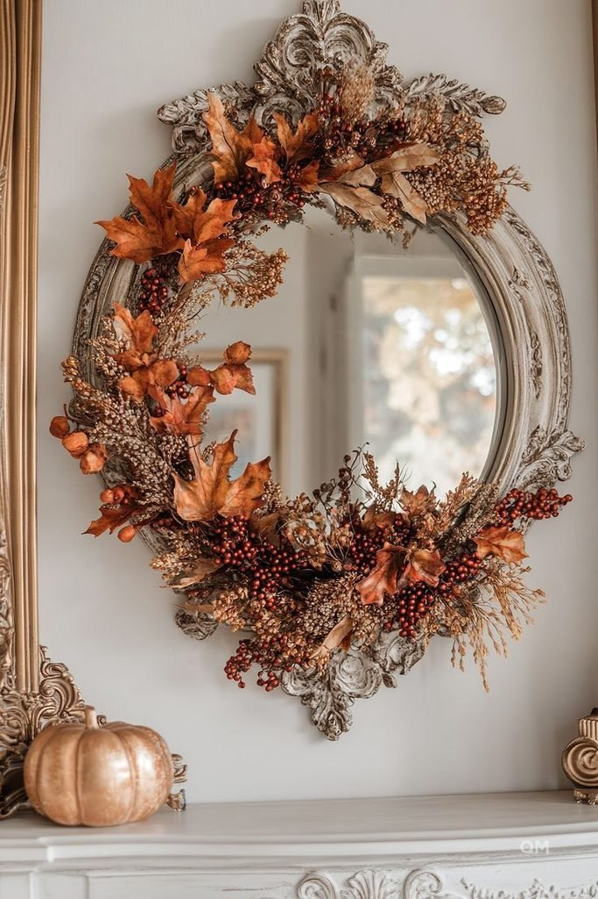
Final Thoughts
None of these eighteen ideas require buying an entirely new set of decorations every September.
A garland, a few well-chosen pumpkins, or simply a handful of fall accents layered onto an already-loved mantel can shift the whole room into the season.
Scale and restraint do more work than quantity ever will, a few thoughtfully placed pieces, given room to breathe, will always look more intentional than a mantel packed edge to edge.
Pick whichever idea matches what is already on hand, and build outward slowly from there.